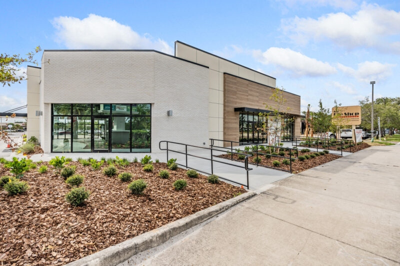

Commercial glass repair is priced very differently from residential, and commercial owners often experience sticker shock on the first emergency repair bill. A cracked storefront panel is not a $300 job the way a cracked bedroom window might be. The replacement glass alone is frequently $800 to $2,000, lift access adds $500 or more, after-hours response carries a 50 to 100 percent premium, and custom sizes can push a simple-looking IGU swap into an 8-week fabrication lead time. This article walks through the real 2026 commercial glass repair cost ranges we see and quote in Florida, broken down by repair type and the factors that drive the number up or down.

Real 2026 Commercial Glass Repair Pricing in Florida
Commercial glass repair costs run wider than residential because the variables are more. The same "broken window" can mean a $900 IGU swap or a $12,000 full-unit replacement depending on whether it is a standard insulating unit in a standard frame or a 10-foot tall custom-fritted curtainwall panel 40 feet up. The pricing ranges below reflect repairs we see and quote regularly across Palm Beach, Broward, Martin, St. Lucie, Collier, Lee, Hillsborough, and Pinellas counties in 2026.
| Repair Type | Typical Cost Range | Lead Time |
|---|---|---|
| Single IGU swap (standard size, clear/low-E) | $800 – $2,000 installed | 5–10 business days |
| Impact-rated IGU swap (standard size) | $1,200 – $3,500 installed | 10–21 business days |
| Oversized or custom IGU swap | $2,500 – $8,500 installed | 4–8 weeks |
| Curtainwall panel with frit or coating | $4,500 – $14,000 installed | 8–16 weeks |
| Storefront door hardware repair (closer, pivots, weatherstrip) | $300 – $1,200 per door | 1–5 business days |
| Storefront door replacement (single leaf, impact) | $3,800 – $7,500 | 4–8 weeks |
| Perimeter sealant replacement (per linear foot) | $8 – $25 | Scheduled |
| Board-up service (typical opening) | $500 – $2,000 | 1–4 hours response |
| Full envelope pressure-wash and seal inspection | $1.50 – $4.00 per SF | Scheduled |
| Fogged IGU diagnostic service call | $250 – $450 | 3–7 business days |
These ranges are for commercial work in Florida with a CGC-licensed glazier. They assume the opening is accessible from the ground or with standard lift equipment. Additional complexity — upper-floor access, after-hours scheduling, and custom product specifications — moves the numbers as described below.
What Drives Repair Pricing Up
Access and Lift Equipment
Anything above the first floor requires lift equipment or swing-stage access. Rental costs add to the repair bill:
- Scissor lift (up to 32 feet): $300–$600 per day
- Boom lift or articulating boom (45–80 feet): $700–$1,500 per day
- Truck-mounted crane for single-set lift: $1,200–$2,500 per half-day
- Swing stage setup and rigging (for 6+ story work): $3,000–$8,000 mobilization plus daily rental
For a second-story IGU swap, the lift rental alone can double the repair cost over the same IGU at ground level. For upper-floor curtainwall panels, the crane or swing-stage setup often exceeds the cost of the glass itself.
After-Hours and Emergency Premium
Emergency response (arrival within 4 hours), weekend work, and overnight installations carry premiums:
- Evening work (after 6 PM weekday): 20–35% premium on labor
- Weekend work (standard): 35–50% premium
- Emergency after-hours (overnight, holiday): 50–100% premium
This applies to labor only — material cost stays the same. For a retail tenant who cannot close during business hours, the after-hours premium is usually the lower-priced option compared to a daytime close.
Custom or Non-Stock Product
Most commercial IGU repairs use replacement glass fabricated to match the existing unit. Standard clear 9/16-inch laminated impact glass ships in 2–3 weeks. Low-E coatings, ceramic frit, tints, spandrel configurations, and custom sizes extend that lead time substantially. Curtainwall panel replacement with custom frit routinely runs 8–16 weeks from order to delivery.
Where lead time drives a building to sit with temporary board-up for months, owners often ask about interim alternatives. Options include swapping to an off-the-shelf unit temporarily and replacing with the correct panel later, or accepting a non-matching clear glass replacement and planning a full facade refresh in a future capital cycle.
Frame and Hardware Condition
If the frame is intact and the glass alone is broken, repair is straightforward. If the frame is also damaged — anchor failure, bent extrusion, corroded hardware — the repair expands to include frame replacement and can double or triple in cost. Corrosion on older aluminum framing in coastal locations sometimes means a simple IGU swap surfaces deeper problems that need to be addressed.
Single IGU Swap: The Most Common Commercial Repair
A storefront tenant reports a cracked window. The glass is broken, the frame is intact, and the unit is a standard 4' x 6' ES-8000 storefront panel with 9/16-inch impact laminated glass. Here is what the repair actually costs:
- Replacement 9/16-inch laminated impact IGU, dark bronze perimeter, Guardian SN68 low-E coating: $750–$1,100 glass cost
- Labor (2-person crew, 4 hours including staging and cleanup): $550–$800
- Sealant, glazing gaskets, incidental materials: $75–$125
- Disposal of broken glass and debris: $50–$100
- Total: $1,425–$2,125 installed, ground-floor access
If the same unit is on the third floor and requires a boom lift, add $600–$900 in lift rental. If the repair is scheduled outside business hours, add another 30–50 percent to labor. If the unit is non-standard size or has a specialty coating, add 2–6 weeks to the lead time and 25–50 percent to glass cost.
Repair vs Replacement Decision
At some point, repair is not the right economic call. A useful rule of thumb for commercial glazing: if the cumulative repair cost over a 5-year window exceeds 40 percent of full replacement cost, plan for replacement instead. Also trigger replacement when:
- IGU seal failures exceed 15–20% of units on a facade
- Framing corrosion or anchor failure is systemic
- Perimeter sealant is at end of life (20+ years) across the whole building
- Current glazing does not meet current code and a renovation triggers upgrade requirements
- Insurance pricing or wind mitigation credit justifies the capital outlay
See our detailed analysis of repair vs replace for commercial glass for the full decision framework.
The Pre-Glazed Advantage in Repairs
When ACG-installed ESWindows ES-8000 storefront or ES-9000 entrance doors require IGU repair, the pre-glazed construction makes the swap faster and cleaner than stick-built systems. Pre-glazed units arrive from the factory with consistent sightlines, tested seals, and verified glass bite — which means the replacement unit drops into the existing opening with no on-site fabrication variability. A stick-built storefront repair requires the crew to re-glaze on site, matching existing sightlines by eye, and field-curing sealant in whatever weather conditions prevail. Pre-glazed repairs are typically 30–50 percent faster per unit.
Getting an Accurate Repair Quote
The fastest way to get an accurate commercial glass repair quote is to provide three pieces of information:
- Photographs of the damage from both interior and exterior
- Rough dimensions of the damaged unit (width, height, thickness if visible)
- Existing system identification if known (ESWindows ES-8000, YKK 451, Kawneer Trifab, etc.)
With those three items, a commercial glazier can typically return a quote within one business day, including lead time and access cost estimates. Without them, the quote requires a site survey — which is still fast (24–48 hours for a survey visit in-region) but adds a step.
Explore full replacement considerations in our commercial glass replacement guide. For emergency response, see our after-hours commercial glazier services article. Real project examples across Florida — including repair and renovation work — are documented on our portfolio page.
Ready to get started?
ACG is a CGC-licensed Florida commercial glazing subcontractor (CGC1531993) with offices in West Palm Beach, Naples, and Tampa. Five years active, 350+ completed commercial projects, over one million installed square feet. Send plans and we return a detailed scope with system recommendations and 2026 pricing inside 48 hours.